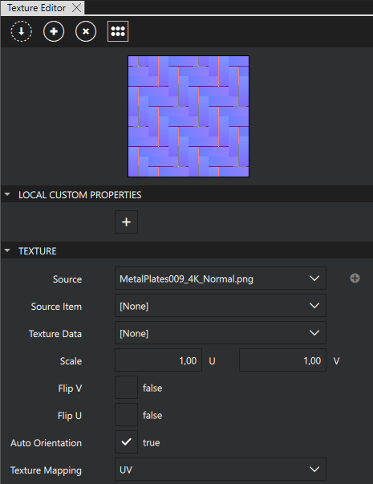
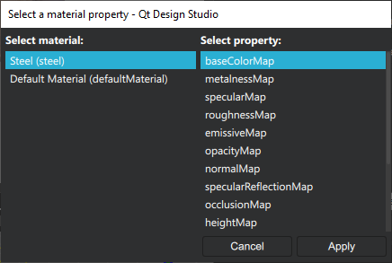

Texture Editor
In the Texture Editor view, you create and manage textures.

Creating a Texture
To create a texture, select  in the Texture Editor view.
in the Texture Editor view.
Note: You can also create textures from the Material Browser view.
When you create a texture, it is empty. To add an image to the texture, do one of the following:
- In the Texture Editor view, set the image in the Source property.
- From the Assets view, drag an image to the Source property in the Texture Editor view.
Applying a Texture to a Material
To apply a texture to a material, first select the material in the Material Browser view and then:
- Select .
- Select the material and property that you want to add the texture to.

Note: You can also apply textures to materials in the Material Browser view.